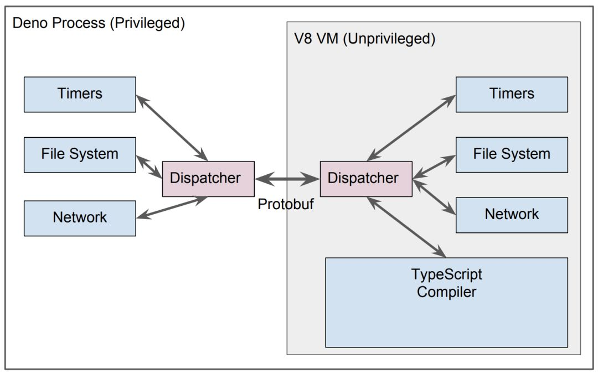

sandbox of javascript
- javascript web Node.js
✨✨✨You can Edit this Article on Github site在一些业务场景当中，我们提供给用户插入自定义逻辑的能力，类似于沙盒、沙箱，允许执行自定义代码，产生的变化可以随后随时删除。
无论是客户端上的沙箱还是服务器端上的沙箱，我们都要确保安全性，用户自定义的脚本必须收到限制和隔离，不能影响到当前宿主程序。
javascript 本身有很多种方式可以实现沙箱，各有千秋，各有使用的地方。
evalnew FunctionwithproxyNode VMDeno
eval
最简单的方式就是直接使用 eval 执行：
eval('console.log("a simple script");'); // a simple script
eval 只是一个普通的函数，只不过他有一个快速通道通向编译器，可以将 string 变成可执行的代码。
eval 的特性是如果当前域里面没有，则会向上遍历，一直到最顶层的 global scope：比如 window global ，他还可以访问 closure 内的变量。
使用 eval 也带来了安全隐患，首先它可以访问和修改它外部作用域中的变量，其次被执行的代码（例如从网络来）可能已被篡改。
global.name = 'TOM';
eval('console.log("i am " + name + " from eval");');
// i am TOM from eval
并且 eval 可读性较差，调试难度较高，也会轻微增加性能消耗。
对于 eval 开发者是贬褒不一，eval 是魔鬼 以及 eval 不是魔鬼
function
Function 构造函数会创建一个新的函数对象，它可以作为 eval 的替代品，如果你绝对必须使用 eval ，我们可以考虑使用 new Function() 代替。
new Function 中作代码评估是在局部函数作用域中运行，所以代码中任何被评估的通过 var 定义的变量都不会自动变成全局变量。最常用的使用场景就是模板，可以参照 javascript-micro-templating
global.name = 'TOM';
function runNewFunction() {
const script = 'console.log("i am " + name + " from new function");';
new Function(script)(); // i am TOM from new function
}
runNewFunction();
我们注意到 new Function 还是可以访问到全局作用域，如何阻止？
with
with 是阻止程序访问上一级作用域的一道防火墙：
global.name = 'TOM';
function runWith() {
function compileCode(code) {
var name = 'jerry';
code = 'with (sandbox) {' + code + '}';
return new Function('sandbox', code);
}
const sandBox = {
sex: 'female'
};
compileCode(
'console.log("i am " + name + " and my sex is " + sandbox.sex + " from with" );'
)(sandBox);
// i am TOM and my sex is female from with
}
runWith();
如上代码，code 被执行时，首先会寻找 sandbox 中的变量，如果不存在，会往上追溯global 对象，虽然有一道防火墙，但是依然不能阻止 fn 访问全局作用域。
iframe
浏览器当中我们可以通过 iframe 标签来添加一个 sandbox attribute 来实现真正的沙箱。
<iframe sandbox src="”...”"></iframe>
参照 MDN Iframe，关于 attribute sandbox 如果指定了空字符串，该属性对呈现在 iframe 框架中的内容启用一些额外的限制条件。属性值可以是用空格分隔的一系列指定的字符串
下面简单列出一些常用的配置项，更详细的内容我们可以参考 mdn。
| 配置 | 效果 |
|---|---|
| allow-forms | 允许进行提交表单 |
| allow-scripts | 运行执行脚本 |
| allow-same-origin | 允许同域请求,比如 ajax,storage |
| allow-popups | 允许 iframe 中弹出新窗口,比如,window.open,target=”_blank” |
| … | … |
可以通过添加自定义的 value 来实现不同的权限：
<iframe
sandbox="”allow-forms"
allow-same-origin
allow-scripts”
src="”...”"
></iframe>
只需要添加一个 allow-scripts 的 sandbox attribute value，我们就可以使用 eval 或者 new function 在 iframe 当中执行自定义代码。
然后主 window 当中和 iframe 通过 postmessage 通信来传递结果，在下面的例子当中，我们通过 sandbox.html 主 window 和 iframe sandboxeval.html 进行通信。
读者可以自行线下学习 postmessage API
下面是 sandbox.html
<!--sandbox.html-->
<button id="eval">eval() in a sandboxed frame.</button>
<textarea>
"a simple script from " + name + " by use iframe"
</textarea>
<iframe src="./sandboxeval.html"></iframe>
<script>
const iframe = document.querySelector('iframe');
const textarea = document.querySelector('textarea');
// 执行 eval command
document.querySelector('#eval').addEventListener('click', _ => {
iframe.contentWindow.postMessage(textarea.textContent, '/');
});
// 接受 iframe eval result
window.addEventListener('message', e => {
// 进行信息来源的验证
if (e.source === iframe.contentWindow) alert('Result: ' + e.data);
});
</script>
下面是 sandboxeval.html
<!--sandboxeval.html-->
<script>
window.name = 'iframe TOM';
window.addEventListener('message', function(e) {
// 相当于window.top.currentWindow.
const mainWindow = e.source;
let result = '';
try {
result = eval(e.data);
} catch (e) {
result = 'eval() threw an exception.';
}
// e.origin 就是原来window的url
mainWindow.postMessage(result, e.origin);
});
</script>
可以查看在线 HTML5 rock 的一个 例子。
看了 iframe 的例子会发现这种实现方式过于臃肿、麻烦，有些时候也要考虑浏览器的兼容性，似乎也不是完美的解决方案
proxy
ES6 中提供了一个 Proxy 函数，它是访问对象前的一个拦截器，在目标对象之前架设一层“拦截”，外界对该对象的访问，都必须先通过这层拦截，因此提供了一种机制，可以对外界的访问进行过滤和改写，配合 Reflect 来用十分强大，下面举一个简单的例子：
(_ => {
const p = new Proxy(
{},
{
get(target, key) {
if (key === 'name') {
return 'TOM';
}
Reflect.get(target, key);
}
}
);
console.log(p.name); // 'TOM'
console.log(p.sex); // undefined
})();
上诉例子当中我们使用 proxy 对访问做拦截处理，p 本不存在的属性不会追溯到全局变量上访问，改进版本的 sandbox 看起来如下：
function runProxy() {
function compileCode(src) {
const code = new Function('sandbox', src);
return function(sandbox) {
const sandboxProxy = new Proxy(sandbox, { has, get });
return code(sandboxProxy);
};
}
function has() {
return true;
}
function get(target, key) {
const value = Reflect.get(target, key);
if (value) return value;
// 获取不到 value 就返回 'undefined_from_Reflect'
return 'undefined_from_Reflect';
}
const script =
'with (sandbox) { log("i am " + name + " and my age is " + age + " by use Proxy "); } ';
const sandbox = Object.create(null);
sandbox.log = console.log;
sandbox.name = 'TOM';
compileCode(script)(sandbox); // i am TOM and my age is undefined_from_Reflect by use Proxy
}
runProxy();
另外在 es6 当中有些方法是不会被 with scope 所影响，主要是通过 Symbol.unscopables 这个特性来检测，比如：
Object.keys(Array.prototype[Symbol.unscopables]);
// ["copyWithin", "entries", "fill", "find", "findIndex", "includes", "keys", "values"]
所以更改为：
function get(target, key) {
// Symbol.unscopables
if (key === Symbol.unscopables) return undefined;
const value = Reflect.get(target, key);
if (value) return value;
// 获取不到 value 就返回 'undefined_from_Reflect'
return 'undefined_from_Reflect';
}
不过这里还是存在一些漏洞：
code中可以提前关闭sandbox的with语境，如'} alert(this); {'code中可以使用eval和new Function直接逃逸
Node VM
Node.js 当中默认提供了一个 vm 内建模块，提供了一些 API 用于在 V8 虚拟机环境中编译和运行代码。JavaScript 代码可以被编译并立即运行，或编译、保存然后再运行。
function runVM() {
const vm = require('vm');
const script = new vm.Script('m + n');
const sandbox = { m: 1, n: 2 };
const context = new vm.createContext(sandbox);
console.log(script.runInContext(context));
}
runVM(); // 3
Node require 的实现
我们 require 一个 .js 文件的时候，Node 本身对一些特定 extension 文件有内建的处理，比如 .js、.json 等等，其实也就是 Node.js 本身对common.js 的实现。
var wrapper = Module.wrap(content);
var compiledWrapper = vm.runInThisContext(wrapper, {
filename: filename,
lineOffset: 0,
displayErrors: true
});
// ...
var result = compiledWrapper.call(
this.exports,
this.exports,
require,
this,
filename,
dirname
);
让我们来一步步进行解释。
1、content 可以理解为你的 .js 文件，例如：
'console.log(module)';
Module.wrap(content) 后生成一串字符串：
'(function (exports, require, module, __filename, __dirname) { console.log(module)\n});';
2、通过 VM.runInThisContext 来执行，将上面的字符串输出变成了可执行的 JS 函数，实际上这个函数就是：
function(exports, require, module, __filename, __dirname) {
console.log(module)
});
3、最后执行这个函数，也就是 compiledWrapper.call(this.exports, this.exports, require, this, filename, dirname) 就是执行了这个模块。
VM 用法
我们也可以参照 API 添加各种参数来配置这个 vm script，比如 timeout：如果执行 code 时间大于 timeout 将终止执行并抛出一个异常：
try {
const script = new vm.Script('while(true){}',{ timeout: 50 });
....
} catch (err){
//打印超时的 log
console.log(err.message);
}
但同时需要注意的是 vm.Script 的 timeout 选项「只针对同步代有效」，而不包括是异步调用的时间：
const script = new vm.Script('setTimeout(()=>{},2000)', { timeout: 50 });
vm 模块没有办法对异步代码直接限制执行时间。我们也不能额外通过一个 timer 去检查超时，因为检查了执行中的 vm 也没有方法去中止掉
另外，在 Node.js 通过 vm.runInContext 看起来似乎隔离了代码执行环境，但实际上却很容易「逃逸」出去：
const vm = require('vm');
const sandbox = {};
const script = new vm.Script(
'this.constructor.constructor("return process")().exit()'
);
const context = vm.createContext(sandbox);
script.runInContext(context);
执行上边的代码，宿主程序立即就会退出。除了退出进程序之外，实际上还能干更多的事情
由于 JavaScript 本身的动态的特点，各种黑魔法防不胜防。事实 Node.js 的官方文档中也提到不要把
VM当做一个安全的沙箱，去执行任意非信任的代码
在社区中有一些开源的模块用于运行不信任代码，例如 sandbox、vm2、jailed 等。相比较而言 vm2 对各方面做了更多的安全工作，相对安全些
用同样的测试代码来试试 vm2 ：
const { VM } = require('vm2');
new VM().run('this.constructor.constructor("return process")().exit()');
如上代码，并没有成功结束掉宿主程序。vm2 官方 REAME 中说 vm2 是一个沙盒，可以在 Node.js 中按全的执行不受信任的代码
然而实际上还是可以干一些坏的事情：
const { VM } = require('vm2');
const vm = new VM({ timeout: 1000, sandbox: {} });
vm.run('new Promise(()=>{})');
你会发现上边的代码永远不会结束，和 Node.js 内建 VM 模块一样， vm2 的 timeout 对异步操作是无效的
或许是否我们提供一个假的 Promise 从而禁用掉 Promise 呢？
const { VM } = require('vm2');
const vm = new VM({
timeout: 1000,
sandbox: { Promise: function() {} }
});
vm.run('Promise = (async function(){})().constructor;new Promise(()=>{});');
事实上发现我们是提供了一个假的 Promise，但是通过 Promise = (async function(){})().constructor 再次又拿到了真正的 Promise
而且某些场景，或许我们本身希望用到 Promise
Deno
注意:目前 deno 的最新进展是已经移除 Golang，主要原因是 双重 GC（ Go 和 TS ）。以后甚至会考虑把目前的 C++ 改写成 Rust
deno 属于 Node 之父 Ryan Dahl 发布新的开源项目，从官方介绍来看，可以认为它是下一代 Node，使用 Go 语言代替 C++ 重新编写跨平台底层内核驱动，上层仍然使用 V8 引擎，最终提供一个安全的 TypeScript runtime
浏览器端的 js 运行不受信的代码，本身就是一个沙盒，但是服务器端运行受信的代码
它有很多新特性，有一点非常符合 sanbodx 的特性：可以控制文件系统和网络访问权限以运行沙盒代码，默认访问只读文件系统可访问，无网络权限。V8 和 Golang 之间的访问只能通过 protobuf 中定义的序列化消息完成
- 在默认情况下，脚本应在不产生任何网络或文件系统写入访问的前提下运行
- 用户可通过标记介入访问: –allow-net –allow-write 等等
- 这种方式允许用户运行各类不受信实用程序（例如 linter）
